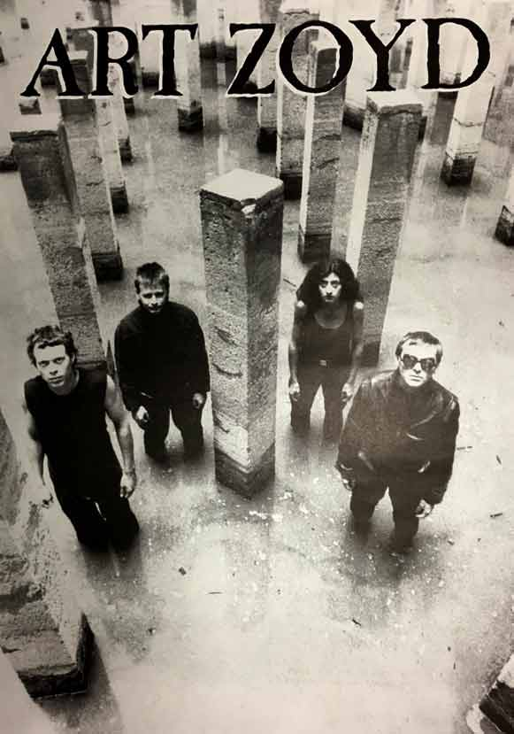
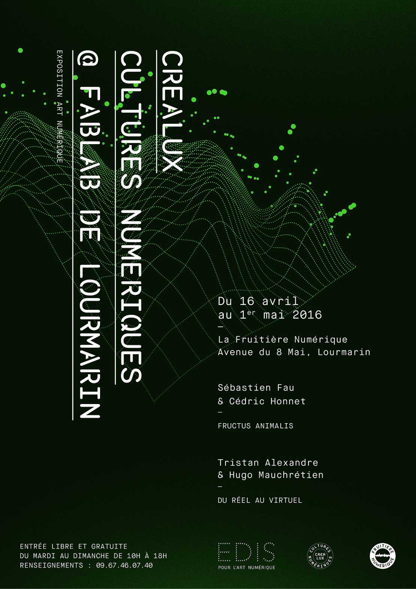

Galerie:


Artiste plasticien





Tristan Alexandre a suivi une formation en peinture académique au sein de l'atelier Bruno Lebel,
puis de l'école
d'art plastique Rue de Seine, Paris.
Il est diplômé de l'Ecole Supérieure des Beaux Arts d'Avignon en 2009.
Tristan Alexandre mène une recherche appliquée sur la place que tiennent les œuvres digitales dans
l'espace privé et
public. Son travail porte également un regard sur l'usage et l'obsolescence, à travers l'étude de
lieux, d'objets,
d'activités ou même de comportements, abandonnés par l'Homme.
S'inspirant de la peinture symbolique, du cinéma sciences fictions et de la photographie, il
présente d'ailleurs
très souvent ses œuvres à la manière d'un tableau ou d'un objet d'interieur, allant jusqu'à mimer
l’encadrement,
l’accrochage et parfois le style d'un peintre. "C'est pour moi une façon de présenter mes
vidéos de manière
attractive. J'utilise cette attraction pour inciter le spectateur à s’attarder et aller vers un
second regard plus
poétique ou plus profond. Selon la manière dont elles sont installées, ces images doivent semer
le doute sur leur
sincérité, accrocher le regard, favoriser la contemplation et l’émotion."
Il a collabore depuis plusieurs années avec le réalisateur Gilles Coudert dans une réflexion portée
sur les nouvelles
formes d'écritures numériques artistiques et plus récemment sur l'architecture avec le laboratoire
PCA STREAM, le
collectif de design SISMO et le plasticien Fabrice Hyber.
voir en ligne : www.lesexperiencesdigitales.com
www.apres-production.com
& www.pca-stream.com
Tristan Alexandre est soutenu par le fond de dotation Edis pour l'art numérique, la fondation Musique en Utopia et par la galerie Artsper à Paris. Il a notamment exposé son travail au Palais de Tokyo de Paris, centre d'art Château de Goutelas, l'Université Descartes de Paris ou le Musée de la Légion étrangère d'Aubagne. Entre 2000 et 2015 il mène un travail sonore porté sur la composition acousmatique et est régulièrement sélectionné aux Journées Internationales de l’électroacoustique et participe aux festival Son Miré de Fabrezan. Tristan Alexandre collabore également avec les studio Game's UP-Paris et Asmodee Digital. Il signe des univers sonores et musicaux pour des productions dans le théâtre, la danse, le cinéma documentaire et le jeux vidéo. Depuis 2016, il intervient comme directeur artistique au sein de l'école RUBIKA à Valenciennes et propose un atelier transmédia entre 2016 et 2020 accompagnant son travail plastique. Il vit et travaille dans la région Hauts de France.
PUBLICATIONS
LAGRANGE, Martine.- Festival Appart - Festival International d'art Contemporain- Saint-Rémy de
Provence-
Tristan Alexandre - in Art Absolument numéro spécial, juillet 2011, pp.42
Art, villes & paysage - Hortillonnages Amiens 2010-2012, Tristan-ALEXANDRE, pp.83
DIFFUSIONS
2014, Interview radiophonique - Nuit des musées, infos-culture, Radio-3DFM, Avignon.
2011, Interview radiophonique - Hommage à Etienne Saur, France Bleu, Picardie.
Tristan ALEXANDRE:
Contact: tristanalexandre80@gmail.com
"L'attente est en proportion du bonheur qu'elle prépare."
- Michel
Dupuy -


.jpg)